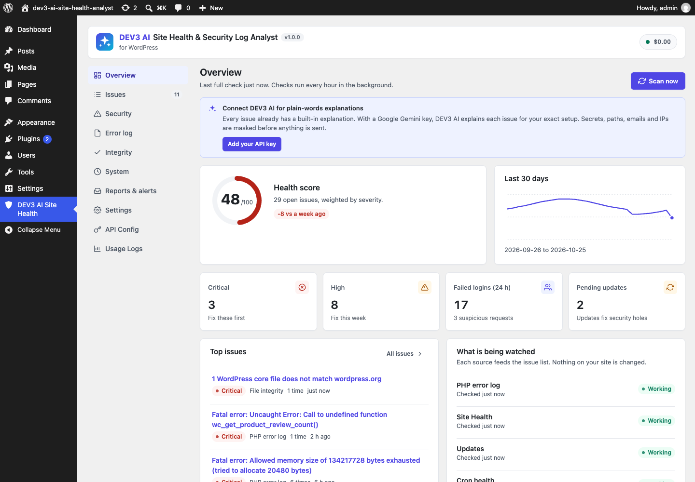
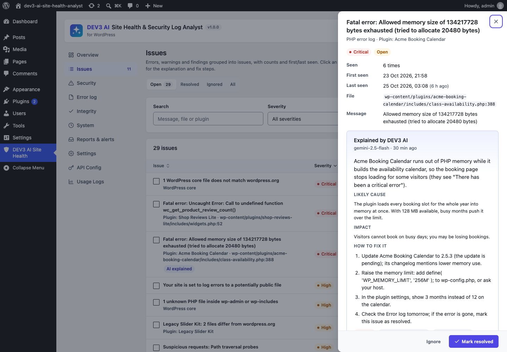
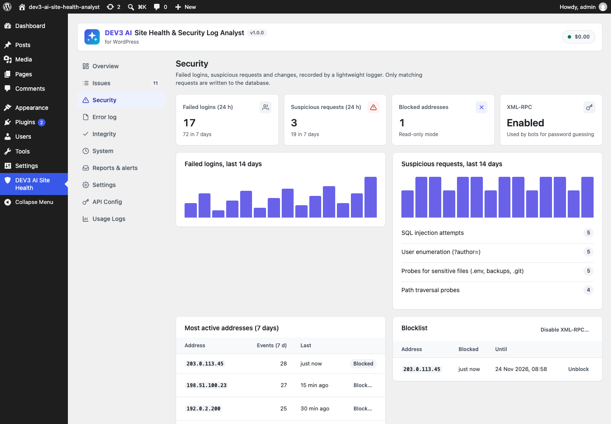
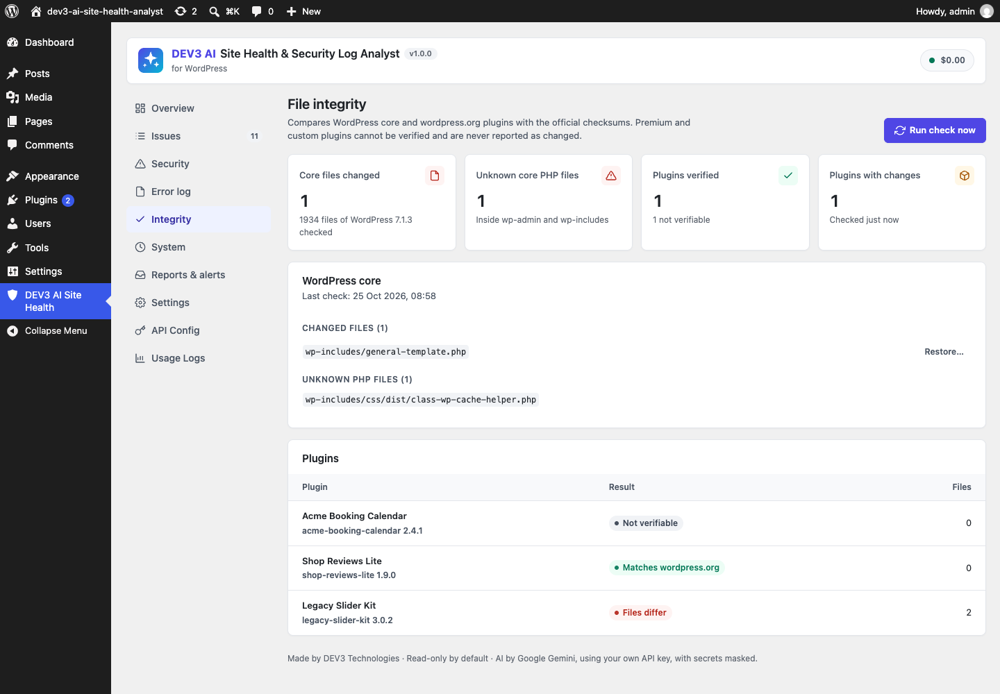

The plugin collects the signals WordPress and PHP already produce (error logs, Site Health, logins, changes, updates, cron, slow queries, file checksums), groups them into issues with counts and first/last seen, ranks them in a health score, and explains each issue in plain words. It is read-only by default.




Installation
- In WordPress go to Plugins → Add New → Upload Plugin, choose
dev3-ai-site-health-analyst.zip, install and activate. - Open DEV3 AI Site Health in the admin menu and click Scan now. Checks then run every hour in the background (WP-Cron).
- To collect PHP errors, enable logging in
wp-config.php(the Overview shows this hint when logging is off):define( 'WP_DEBUG', true ); define( 'WP_DEBUG_LOG', WP_CONTENT_DIR . '/../logs/debug.log' ); // outside the web root is safest define( 'WP_DEBUG_DISPLAY', false );
Or point Settings → Custom log path to your host's PHP error log (must end in.logor.txt).
Google Gemini API key (optional)
- Create a key at Google AI Studio.
- Paste it under API Config and click Validate. The key is stored encrypted (AES-256-GCM) and never sent to the browser. You can also define
DEV3SH_GEMINI_API_KEYinwp-config.php. - Pick models (default
gemini-2.5-flash), and optionally set a monthly budget cap. Usage Logs shows requests, tokens and estimated cost.
Without a key, or with AI switched off, everything works: every issue has a built-in, rule-based explanation.
Features
PHP error log
Finds the log from WP_DEBUG_LOG, php.ini error_log or a custom path. Each run reads only the new bytes (default max 2 MB), never half-written lines. Rotation (debug.log.1, dated files) and truncation are detected by size, inode and a hash of the first bytes, so no line is counted twice. Fatal, parse, warning, notice, deprecated and WordPress database errors are parsed, with stack traces, file/line and the plugin or theme responsible. The Error log screen shows the newest entries with a level filter and warns if the log file is web-reachable.
Site Health
Runs the WordPress Site Health tests daily (including loopback, wordpress.org and HTTPS tests, optional). Critical results become high issues, recommended ones low issues, with the test's own advice as fix steps.
Security log
Logs failed logins (wp-login, XML-RPC, REST), logins after failures and administrator logins, plus suspicious requests: path traversal, /etc/passwd probes, SQL injection and script injection patterns, sensitive files (.env, backups, .git, phpinfo), author and REST user enumeration, and 404 floods. Only matching requests write to the database, capped at 30 writes per IP per minute. IPs can be anonymised. Brute force (N failures per IP per hour) becomes a high issue.
Changes
Plugin activations, deactivations, installs, updates and deletions, theme switches and core updates are logged with the user. A daily snapshot comparison catches changes made outside WordPress (FTP, SSH, deployments).
Updates, cron and slow queries
Pending core/plugin/theme updates, many inactive plugins and old PHP become issues that resolve themselves when fixed. Cron health reports overdue tasks, tasks whose code was removed and a WP-Cron that stopped running. With SAVEQUERIES on, queries slower than the threshold (default 250 ms) are grouped by shape and attributed to a plugin.
File integrity
A background job compares core files with api.wordpress.org checksums (changed, missing and unknown PHP files in wp-admin/wp-includes) and every wordpress.org plugin with downloads.wordpress.org/plugin-checksums. Premium and custom plugins are reported as "not verifiable", never as changed. Schedule: weekly (default), daily or manual.
Issues and health score
Repeated messages are grouped by a fingerprint (numbers, addresses and timestamps collapsed), with count, first/last seen and the last three samples. Issues can be resolved (they re-open when they come back), ignored, or bulk-updated. The score is 100 × e^(−penalty/180) (critical 25, high 10, medium 4, low 1; at most 30 points per source), capped at 69 while a critical issue is open.
DEV3 AI explanations
In an issue, Explain with DEV3 AI returns a summary, likely cause, impact, numbered steps, who should fix it (you, your developer or your host) and urgency. You can ask follow-up questions, and "Explain critical & high with DEV3 AI" explains all of them in the background. The AI may propose a one-click fix, but only fixes that the server considers applicable are shown, and you still preview and confirm them.
Privacy & masking
Everything sent to Google Gemini passes through the redactor first. Click What is sent? in any issue to see the exact masked payload.
| Masked | Becomes |
|---|---|
| API keys (Google, Stripe, OpenAI, GitHub, Slack, AWS), JWTs, Bearer/Basic tokens | [api-key], [jwt], [token] |
| password / secret / token / key / salt values in URLs, JSON, PHP defines, headers, cookies | [secret] |
| Database users, hosts and DSNs | [db-user], [db-host], [dsn] |
| Absolute paths | relative WordPress paths, or [path]/file.php |
| Your site address, emails, IPv4/IPv6, card and phone numbers, user names | [site], [email], [ip], [card], [phone], [user] |
The security log is included in WordPress's personal data export and erase tools. Events are kept for 30 days by default.
One-click fixes
Off by default. Turn on Settings → Allow one-click fixes (with a confirmation). Then each fix shows what changes, issues a single-use token valid for 10 minutes and needs you to tick "I understand" before Apply fix. Every fix is logged under Reports & alerts → Fix history with Undo.
| Fix | What it does | Undo |
|---|---|---|
| Deactivate plugin | Deactivates the plugin blamed by an error | Re-activates it |
| Restore core file | Downloads the official file, verifies its md5 against wordpress.org, backs up the current file to uploads/dev3sh-backups, writes it | Restores the backup |
| Block IP | Returns 403 to that address for N days (never your own IP) | Unblock |
| Remove scheduled task | Unschedules a cron hook that no code handles | Re-schedules it |
| Disable XML-RPC | Turns off xmlrpc.php methods | Turns them back on |
Alerts & weekly report
Alerts (each at most once per cool-down, default 6 h): new fatal PHP error, new critical issue, changed core/plugin files, failed logins per hour, suspicious requests per hour, score below a threshold. The weekly report (day and hour in site time) contains the score and trend, new/resolved issues, top issues, security summary with /24-anonymised addresses, updates, integrity and cron, plus an optional DEV3 AI summary paragraph. Preview it and send it now from Reports & alerts. Use an SMTP plugin for reliable delivery.
Settings
| Setting | Default |
|---|---|
| Collectors (each source on/off) | all on |
| Custom log path / read at most per run | empty / 2048 KB |
| Collect notices / deprecations | on / on |
| Auto-resolve PHP issues not seen for | 14 days |
| Security logger / admin logins / anonymise IPs | on / on / off |
| Brute-force threshold / 404 flood threshold | 10 per hour / 20 per 5 min |
| Keep events for | 30 days |
| Integrity check | weekly |
| Slow query threshold | 250 ms |
| Allow one-click fixes / block days | off / 30 |
WP-CLI
wp dev3sh scan [--source=php,updates] wp dev3sh issues [--status=open] [--format=table|json|csv] wp dev3sh integrity wp dev3sh report
Hooks for developers
| Hook | Type | Use |
|---|---|---|
dev3sh_log_path( $path, $source ) | filter | Read a different log file |
dev3sh_redact( $masked, $original ) | filter | Add masking rules |
dev3sh_mask_literals( $strings ) | filter | Extra words to mask (e.g. a company name) |
dev3sh_security_writes_per_minute( $n ) | filter | Write cap per IP (30) |
dev3sh_trusted_ip_header( '' ) | filter | Client IP header behind a proxy/CDN, e.g. HTTP_CF_CONNECTING_IP |
dev3sh_cron_grace( $seconds ) | filter | When a task counts as overdue |
dev3sh_site_health_skip( $ids ) | filter | Skip Site Health tests |
dev3sh_core_integrity( $result ) | filter | Allow known custom core files |
dev3sh_prompt_explain_issue( $prompt ) | filter | Change the AI prompt |
dev3sh_issue_created( $id, $data ) | action | React to new issues (Slack, ticketing…) |
dev3sh_fix_applied( $plan, $event_id ) | action | Audit applied fixes |
dev3sh_manage_capability( 'manage_options' ) | filter | Who can use the plugin |
FAQ
Will it slow down my site?
No. Normal requests only run a few regex checks on the URL. Collection runs hourly in the background; the integrity check runs as a chunked background job.
Does it change anything on my site?
No, unless you allow one-click fixes; each still needs your confirmation and can be undone.
Why is a plugin "not verifiable"?
Only plugins hosted on wordpress.org have official checksums. Premium plugins are never reported as changed.
My host uses a proxy/CDN and all IPs look the same.
Use the dev3sh_trusted_ip_header filter before blocking addresses.
Where is my data stored?
In two tables (wp_dev3sh_issues, wp_dev3sh_events) and a few options. Enable "Delete all data when the plugin is uninstalled" to remove everything.
Changelog
1.0.0 – Initial release.